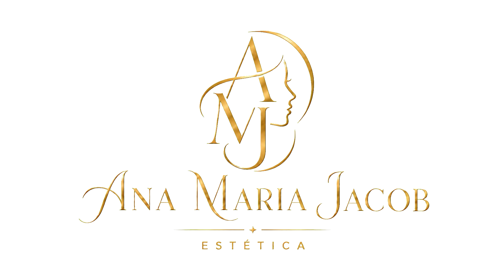

Expressão, volume e harmonia
Conheça toxina botulínica, preenchimento facial, fios de PDO e o planejamento da harmonização facial.
Cada proposta respeita sua anatomia e expressão.Cuidado individualizado
Atendimento estético com escuta, orientação clara e cuidados definidos após avaliação individual.
Instagram @anamariajacobA indicação de qualquer procedimento depende de avaliação individual.

Nossos tratamentos
Um guia tranquilo para conhecer possibilidades. A indicação é sempre definida após avaliação individual.
Conheça toxina botulínica, preenchimento facial, fios de PDO e o planejamento da harmonização facial.
Cada proposta respeita sua anatomia e expressão.Entenda, em palavras simples, skinbooster, peeling, microagulhamento e intradermoterapia facial.
Produto e técnica dependem da avaliação.Saiba como a intradermoterapia e o microagulhamento podem integrar um plano capilar individualizado.
A causa da queixa precisa ser considerada.Trabalhos realizados
A galeria será formada somente por materiais autorizados, sem identificação das pacientes. Os resultados podem variar de pessoa para pessoa.
Conversar com a AnaSobre a clínica
Na Ana Maria Jacob Estética, prezamos por um atendimento de excelência, acolhedor e individualizado. Queremos que cada pessoa se sinta em casa, segura e satisfeita em todas as etapas do cuidado.
Do preparo do ambiente à escolha de cada técnica, cuidamos de todos os detalhes com atenção e responsabilidade. Nosso propósito é valorizar a autoestima de cada paciente com uma estética natural, respeitando suas características e evitando excessos.
Ana Maria Costa Jacob Neri · Farmacêutica · CRF/MG 40880
Farmacêutica · CRF/MG 40880
Conheça a profissional
Antes de qualquer técnica, existe uma pessoa que merece ser ouvida.
Natural de Aquidauana, Mato Grosso do Sul, Ana Maria formou-se em Farmácia pela Universidade Católica Dom Bosco — UCDB, instituição de referência regional e com uma longa trajetória educacional. Após a graduação, casou-se e mudou-se para Minas Gerais, onde continuou desenvolvendo sua carreira e aprofundando sua atuação na estética.
Sua experiência com produtos manipulados fortaleceu o conhecimento sobre fórmulas, concentrações, compatibilidades e ativos. Essa vivência farmacêutica contribui para uma escolha mais criteriosa dos materiais e para a compreensão de cada etapa do cuidado.
Com pós-graduação em Farmácia Estética e atualização contínua, Ana Maria reúne formações em harmonização facial, toxina botulínica e preenchimento Full Face. Atualmente, está cursando residência em Full Face Harmony e continua participando de novos cursos para aprofundar técnicas e oferecer um atendimento cada vez mais responsável.
Cuidado que respeita quem você é. Escuta atenta, materiais criteriosamente selecionados e técnicas conduzidas com responsabilidade e naturalidade.
Formação e aperfeiçoamentos
Graduação, pós-graduação e cursos presenciais que fortalecem uma atuação cuidadosa, atualizada e responsável.
Universidade Católica Dom Bosco — UCDB.
Pós-graduação lato sensu, com carga horária de 360 horas.
Curso presencial de imersão em harmonização facial.
Mentoria VIP em toxina botulínica e preenchimento facial Full Face.
Curso VIP teórico-prático facial e corporal sobre bioestimuladores de colágeno e fios lisos absorvíveis.
Formação atual com aprofundamento técnico e anatômico. Em junho de 2026, concluiu imersão Fresh Cadaver na UFMG, com 4 horas.
Nosso compromisso
Não começamos por um procedimento. Começamos pela sua história, suas expectativas e pelo que realmente incomoda você. A proposta é construir um cuidado seguro, responsável e natural.
Antes do atendimento
A ficha de anamnese fica separada porque serve para todos os atendimentos. Os termos de consentimento estão reunidos em um só lugar para você escolher o procedimento indicado.
Para proteger sua privacidade, informações de saúde devem ser enviadas pelo formulário da clínica, não pelo WhatsApp.
Sua jornada de cuidado
Antes e depois do atendimento
Este conteúdo é geral e ajuda você a chegar mais tranquila. Depois da avaliação, siga sempre as recomendações individuais entregues pela profissional.
Preencha a anamnese com sinceridade. Informe medicamentos, alergias, procedimentos anteriores e qualquer mudança recente na sua saúde. Para proteger sua privacidade, envie esses dados pelo formulário, e não pela conversa do WhatsApp.
Abrir ficha de anamneseConte o que incomoda, suas expectativas e seus receios. Pergunte sobre o plano sugerido, as alternativas, os possíveis riscos e, quando aplicável, o produto que poderá ser utilizado. O cuidado é definido somente depois dessa conversa.
Entender os tratamentosSiga as orientações específicas recebidas para o seu caso e não faça receitas caseiras nem use produtos ou medicamentos por conta própria. Se tiver dúvida ou perceber algo diferente, entre em contato com a clínica.
Ver cuidados pós-procedimentoO retorno faz parte do acompanhamento e não significa retoque automático. Se houver piora rápida, dor intensa, dificuldade para respirar ou engolir, alteração visual ou outro sinal grave, procure atendimento de urgência. O SAMU atende gratuitamente pelo número 192.
Entender a importância do retornoConteúdo geral baseado nas orientações da Anvisa sobre procedimentos estéticos seguros e do Ministério da Saúde sobre o SAMU 192.
Instagram da Ana
Acompanhe bastidores, atualizações, conteúdos educativos e novidades da clínica em @anamariajacob. O canal no YouTube também está em preparação.
Contato
Entre em contato para tirar dúvidas gerais ou agendar uma avaliação.
Dúvidas sobre pós-procedimento e retorno